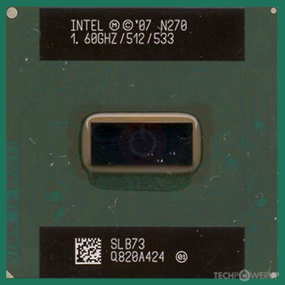
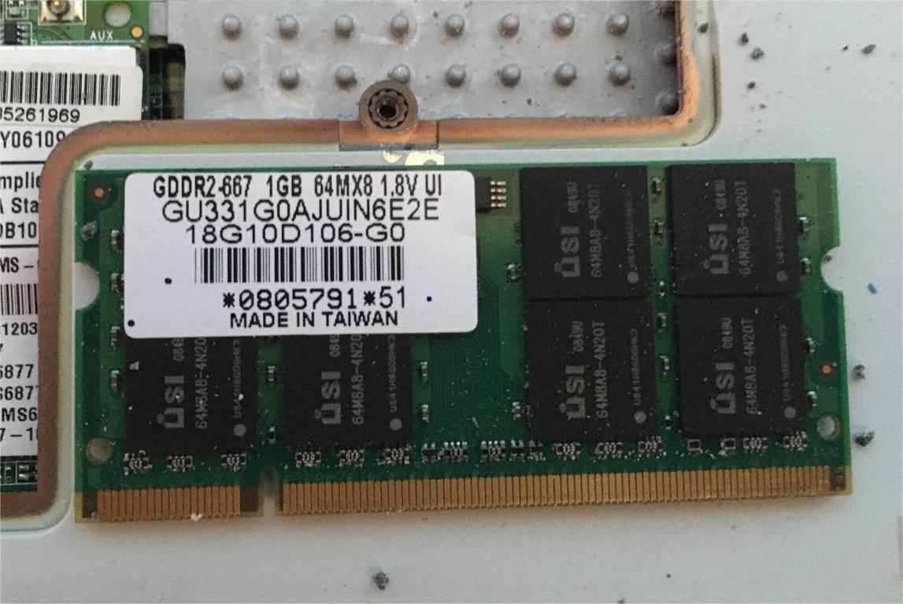
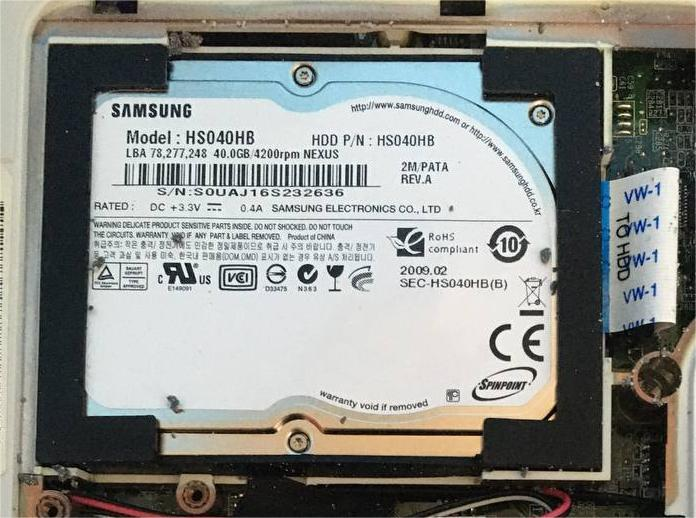
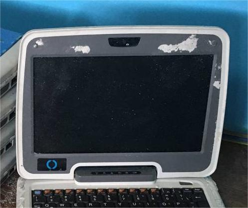
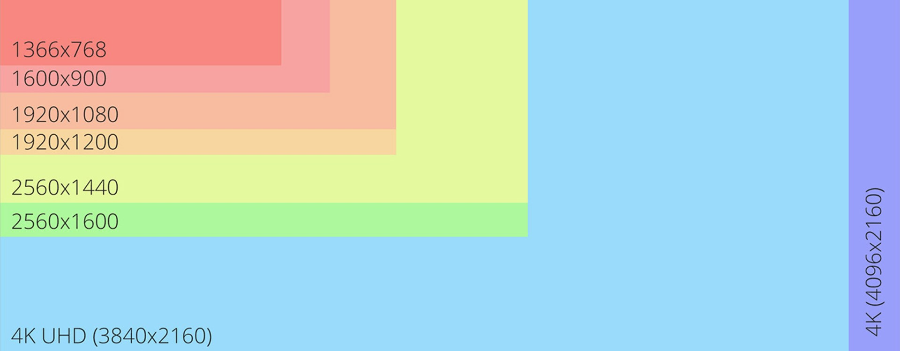
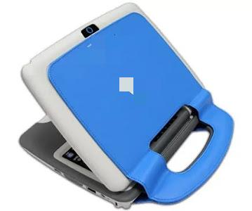
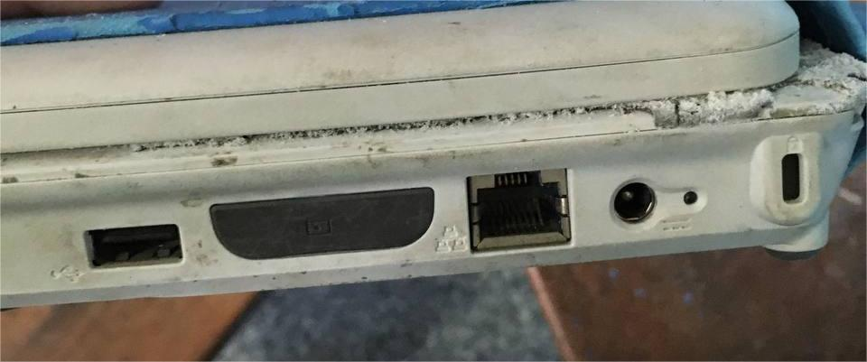
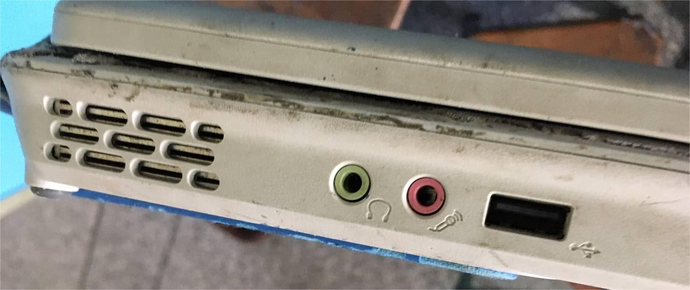
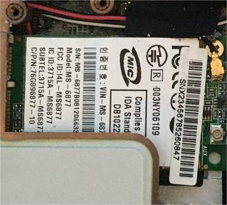
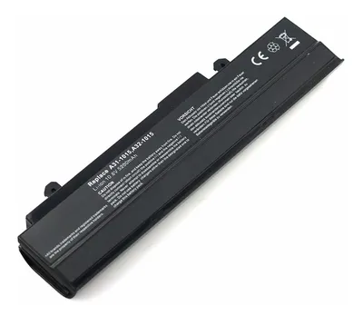

Buscador de Componentes
Escribe el nombre del componente que deseas consultar.
Componentes de Hardware
Elementos físicos que conforman la estructura de la Canaima.
-

Procesador — Intel Atom N270 (1.6 GHz)
Microprocesador de bajo consumo diseñado para equipos portátiles educativos. Su arquitectura permite ejecutar aplicaciones básicas, navegadores, programas escolares y sistemas Linux livianos. Posee tecnología HyperThreading que mejora la multitarea ligera.
-
Chipset — Intel 945GSE
Controlador principal que gestiona la comunicación entre CPU, memoria RAM, video integrado y dispositivos periféricos. Incluye gráficos integrados Intel GMA 950.

-

Memoria RAM — 1GB DDR2 667 MHz
Memoria de acceso rápido que almacena información temporal. Crucial para el rendimiento al abrir programas, navegar o ejecutar aplicaciones educativas.
-

Disco Duro — 40GB PATA 1.8"
Almacena el sistema operativo, documentos, configuraciones y programas escolares. Es una unidad mecánica pequeña diseñada para equipos compactos.
-

Pantalla TFT de 8"
Panel compacto diseñado para bajo consumo. Adecuado para lectura, tareas básicas y uso escolar continuo.
-

Resolución Máxima — 1024x600
Ofrece calidad estándar para equipos portátiles educativos, suficiente para textos, aplicaciones escolares y navegación web.
-

Cámara Web — 0.37 MP
Diseñada para videollamadas básicas en plataformas educativas. Su resolución limitada permite uso funcional en condiciones de buena iluminación.
-

Altavoces y Entradas
Incluye altavoces internos, entrada para micrófono 3.5 mm y salida de sonido 3.5 mm. Ideal para actividades multimedia educativas.
-

Interfaces y Puertos
- 2 puertos USB (1.0 / 2.0)
- 1 puerto VGA para monitor externo
- 1 puerto Ethernet RJ-45 Realtek RTL8139
- 1 lector de tarjetas SD
-

Tarjeta Wi-Fi — RT73 USB Wireless LAN
Permite conexión inalámbrica estable bajo los estándares 802.11 b/g. Adecuada para navegación escolar y plataformas educativas.
-

Batería — Ion-litio (2 celdas)
Proporciona entre 3 y 3.5 horas de autonomía. Es ligera y diseñada para seguridad en ambientes escolares.
-
Peso — 1.4 kg
Su peso liviano facilita su transporte por estudiantes y docentes.
Componentes de Software
Programas, controladores y sistemas que permiten el funcionamiento de la Canaima.
-
Sistema Operativo — Canaima GNU/Linux
Basado en Debian. Incluye herramientas educativas, aplicaciones de productividad y entornos livianos que optimizan el rendimiento del equipo.
-
Controladores del Sistema
Incluyen drivers para Wi-Fi, gráficos Intel, audio, cámara web y puertos internos. Son esenciales para reconocer el hardware y permitir su funcionamiento.
-
Aplicaciones Educativas
Software preinstalado para lectura, matemática, actividades interactivas, navegación y escritura. Optimizado para uso escolar.
-
BIOS / Firmware
Permite la comunicación entre hardware y software. Controla el arranque del sistema y la configuración primaria del equipo.